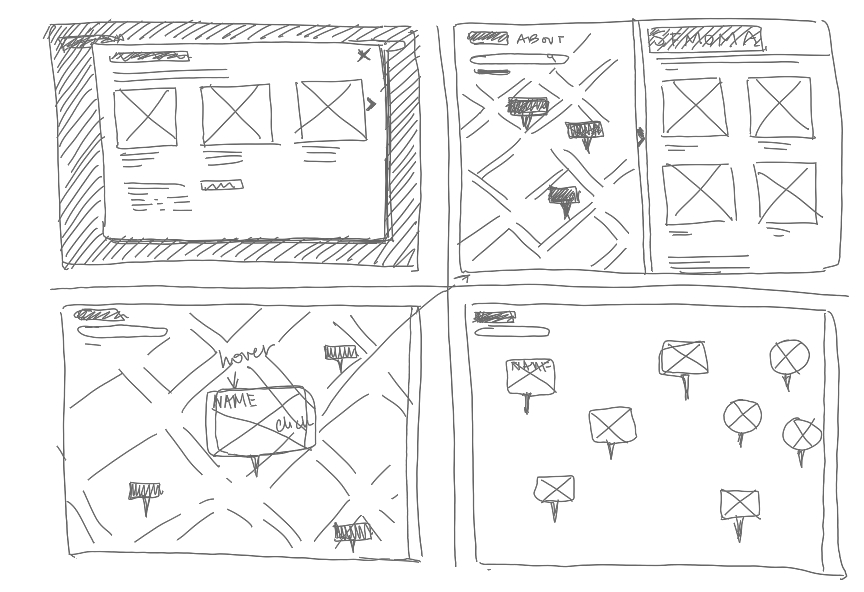
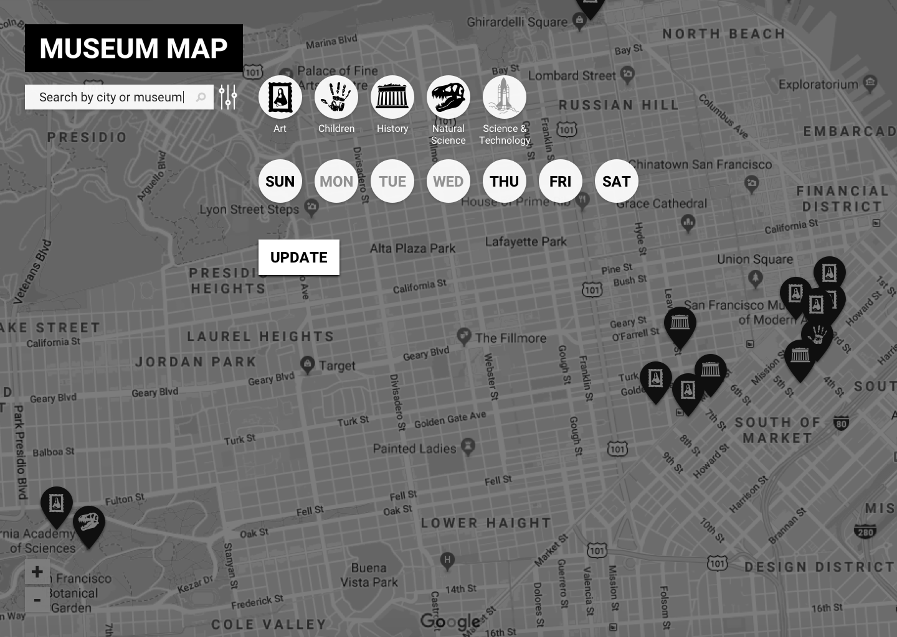
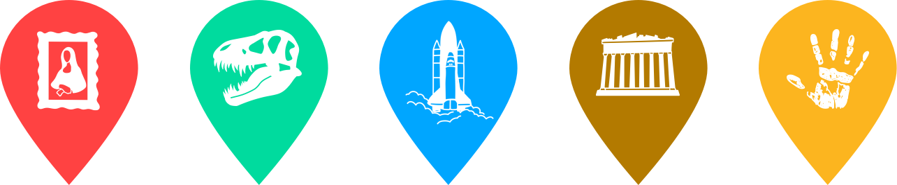

I began the visual design process by sketching ideas for the web app. I took inspiration from Google maps – currently one of the most useful tools for museum-goers to gather museum information and a format that most are familiar navigating. Next, I used high-fidelity wireframes to confirm user understanding of filters in the Museum Map interface with click tests and interviews.

I conducted additional rounds of user testing and gathered more feedback in the mockup stage. I also implemented a styleguide for Museum Map, using both color and original icons to help users identify museum types; the logo and typeface were kept simple to emphasize content.

Main updates made based on feedback were adding filters for exhibition type, editing hover-state colors for readability, and making sure main museum links read as clickable. The biggest surprise for me was users’ preference for a map with more saturated color than I originally went with.
The final step in this project was using Flinto to create a clickable prototype. For a future iteration of this project I would like to add a list view, a suggestion I received while gathering feedback.